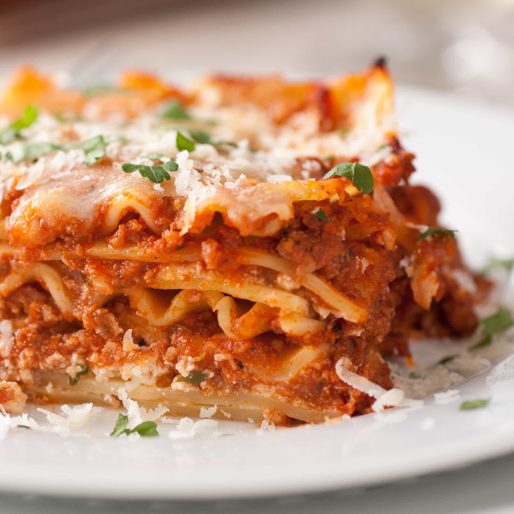
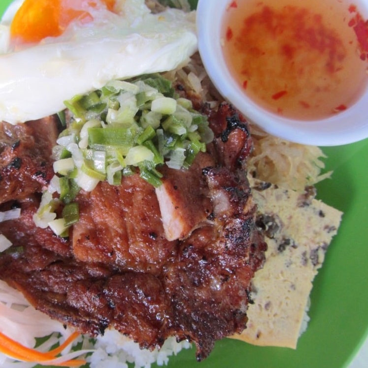
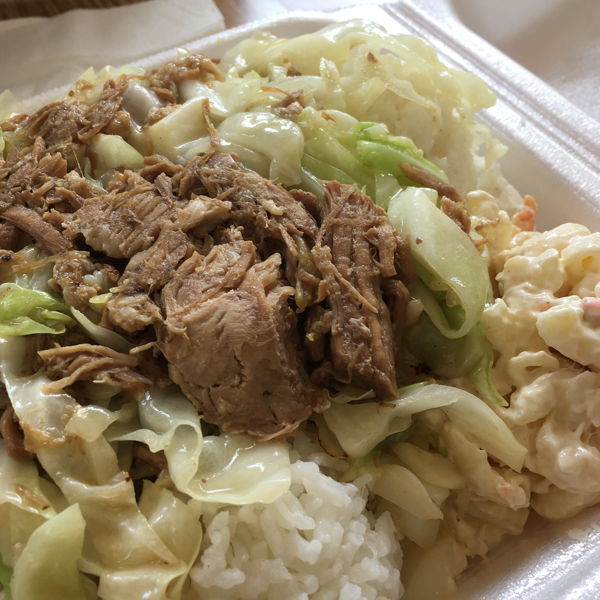
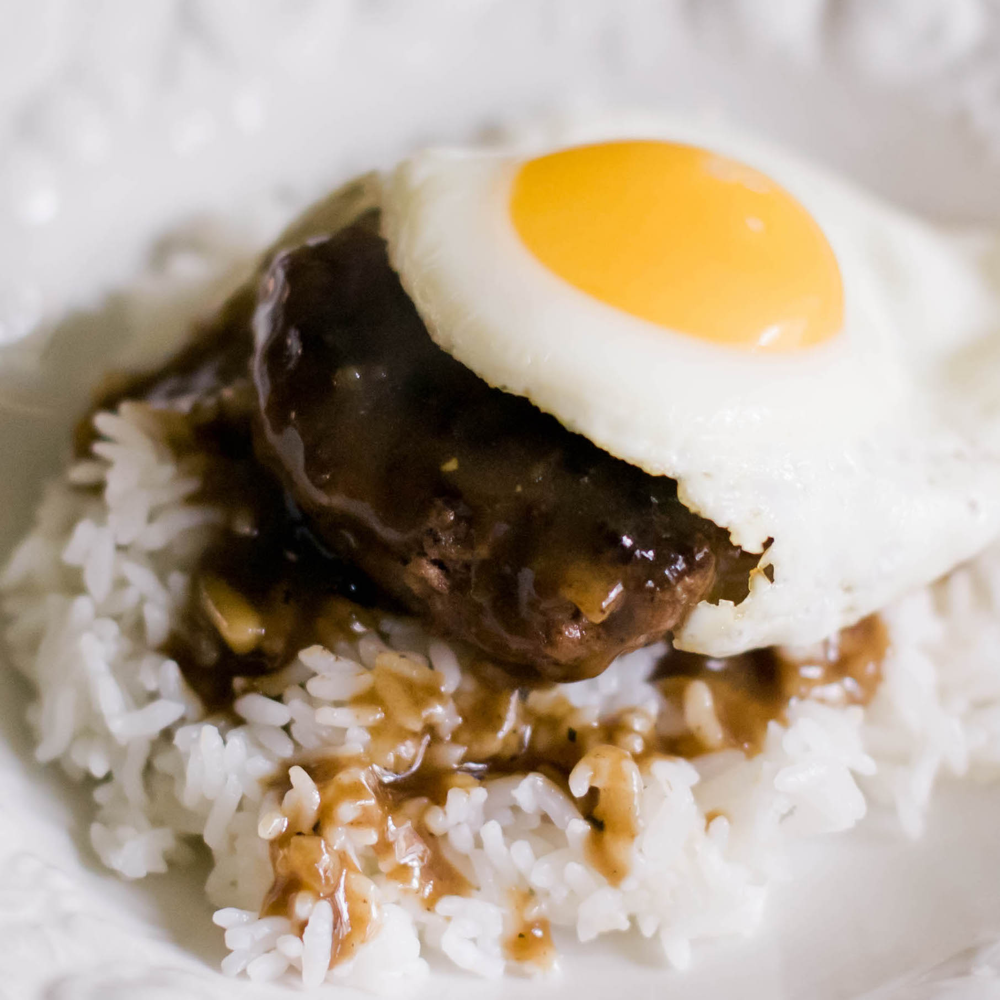
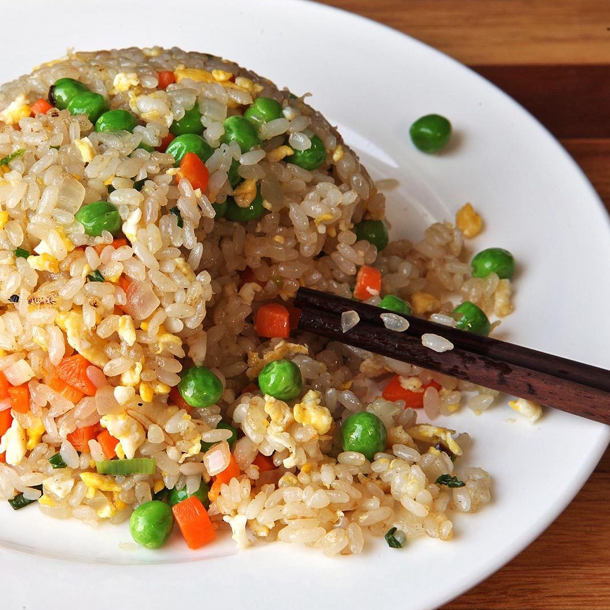
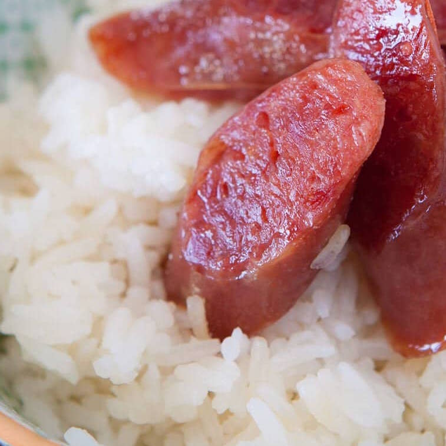
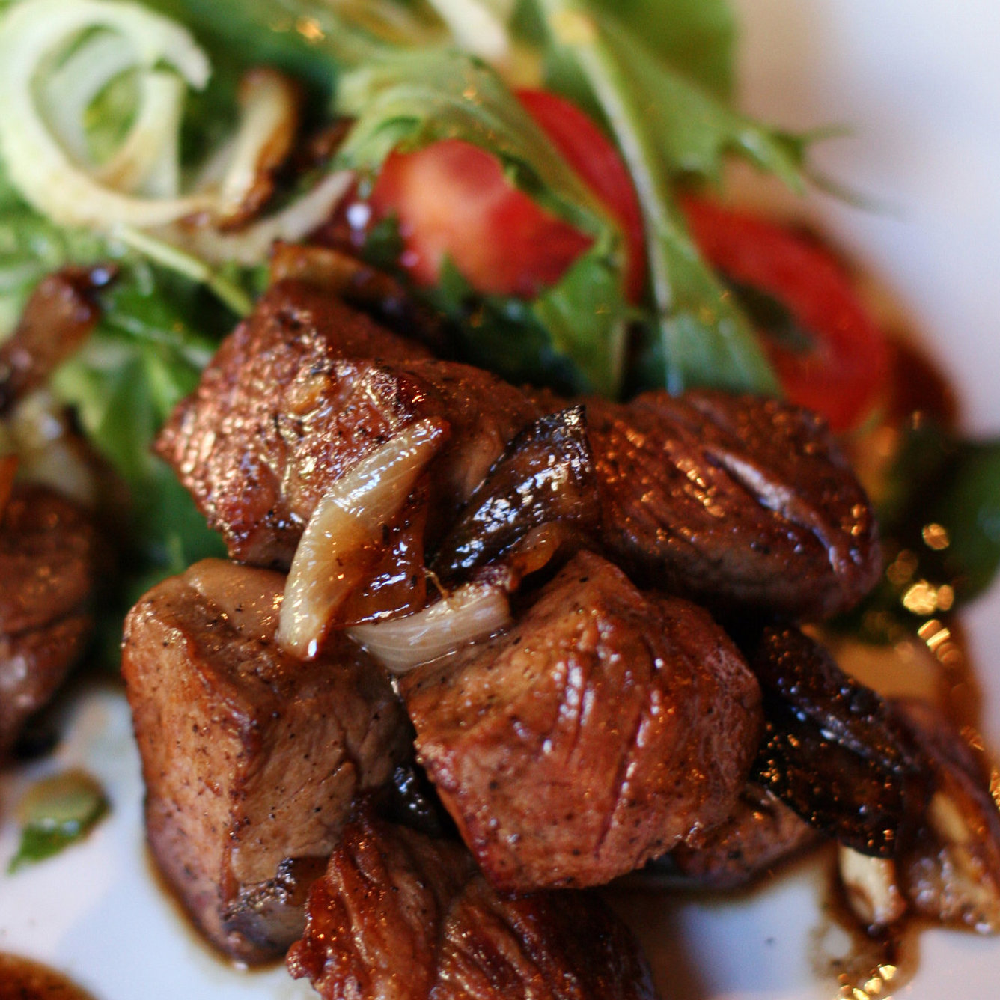
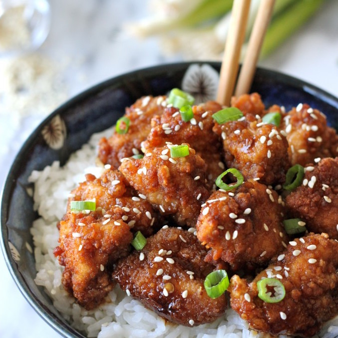

Lasagne is a type of wide, flat pasta, possibly one of the oldest types of pasta. Lasagne, or the singular lasagna, commonly refers to a culinary dish made with stacked layers of pasta alternated with sauces and ingredients such as meats, vegetables and cheese, and sometimes topped with melted grated cheese.
INGREDIENTS
9 lasagna noodles
t tbsp olive oil
1 lb ground beef
1 onion, diced
Kosher salt and freshly ground black pepper
1 (28 oz) can crushed tomatoes
1 tbsp italian seasoning
1 (15 oz) package whole milk ricotta
3 1/2 cups shredded mozzarella, divided
1 large egg, beaten
1/4 cup freshly grated parmesan cheese
2 tbsp chopped fresh parsley leaves
INSTRUCTIONS
Preheat oven to 350 degrees F. Lightly oil a 9×13 baking dish or coat with nonstick spray.
In a large pot of boiling salted water, cook lasagna noodles according to package instructions.
Heat olive oil in a large skillet over medium high heat. Add ground beef and onion and cook until beef has browned, about 3-5 minutes, making sure to crumble the beef as it cooks; season with salt and pepper, to taste. Drain excess fat. Stir in tomatoes and Italian seasoning until well combined.
In a medium bowl, combine ricotta, 1/2 cup mozzarella and egg; set aside.
Spread 1 cup tomato mixture onto the bottom of a 9×13 baking dish; top with 3 lasagna noodles, 1/2 of the ricotta cheese mixture and 1 cup mozzarella cheese. Repeat with a second layer. Top with remaining noodles, tomato mixture, 1 cup mozzarella cheese and Parmesan.*
Place into oven and bake for 35-45 minutes, or until bubbling. Then broil for 2-3 minutes, or until top is browned in spots.
Let cool 15 minutes. Serve, garnished with parsley, if desired.
Dish Difficulty: 30%
BROKEN RICE

Cơm tấm, or broken rice, is a Vietnamese dish made from rice with fractured rice grains. Tấm refers to the broken rice grains, while cơm refers to cooked rice. Although there are varied names like cơm tấm Sài Gòn, particularly for Saigon, the main ingredients remain the same for most cases.
INGREDIENTS
2 cups rice (soaked for 1 hour and broken up)
1 carrot
1/2 cup vinegar
1 cucumber
1 tomato
Pork Chop
2 pieces pork chop around 200g each
1 tbsp minced lemon grass
1 tbsp minced garlic
1 tbsp fish sauce
1 tbsp dark soy sauce
1 tbsp honey
2 tbsp sugar
1/2 tsp pepper
3 tbsp spring onion (chopped)
Dipping Sauce
2 tbsp fish sauce
2 tbsp lime juice
2 tbsp sugar
4-5 tbsp water
1 tbsp chopped garlic
INSTRUCTIONS
Add to 2 pieces pork chop (around 200g each), 1 tbsp minced lemon grass, 1 tbsp minced garlic, 1 tbsp fish sauce, 1 tbsp dark soy sauce, 1 tbsp honey, 2 tbsp oil, 1 tbsp sugar, ¼ tsp pepper and 3 tablespoons spring onions (chopped).
Mix well and let it marinate for 4 hours.
Wash 2 cup rice and soak for 1 hour. Break rice buy rubbing them with your fingers (skip this if using broken rice), and drain water.
Add enough water to cover the rice and cook in rice cooker.
In a bowl add 2 tbsp fish sauce, 2 tbsp lime juice, 2 tbsp sugar, 4-5 tbsp water and 1 tbsp chopped garlic. Mix well and set aside.
Shred 1 carrot and add half cup vinegar. Set aside for 10-15 minutes.
Grill pork chops over the charcoal grill, for 10-15 minutes until cooked. Remove and let it rest for 1 min.
Serve grilled pork chop with cooked broken rice, pickle carrot and dipping sauce.
Optional to add sliced cucumbers and tomatoes and sunny side up egg.
Dish Difficulty: 60%
KALUA PORK

Kālua is a traditional Hawaiian cooking method that utilizes an imu, a type of underground oven. The word kālua, which literally means "to cook in an underground oven", may also be used to describe the food cooked in this manner, such as kālua pig or kālua turkey, which are commonly served at luau feasts.
INGREDIENTS
1 (6 pound) pork butt roast
1 1/2 tbsp Hawaiian sea salt
1 tbsp liquid smoke flavoring
lettuce
INSTRUCTIONS
Takes 10 minutes to prep, but 20 hours to set in a Slow Cooker
Pierce pork all over with a carving fork. Rub salt then liquid smoke over meat. Place roast in a slow cooker.
Cover, and cook on Low for 16 to 20 hours, turning once during cooking time.
Remove meat from slow cooker, and shred, adding drippings as needed to moisten.
Dish Difficulty: 10%
LOCO MOCO

Loco moco is a dish featured in contemporary Hawaiian cuisine. There are many variations, but the traditional loco moco consists of white rice, topped with a hamburger patty, a fried egg, and brown gravy.
INGREDIENTS
cooking spray
1 lb ground beef chunk
1 cup sliced onion
1/2 cup water
1 cup sliced mushrooms
1 (12 oz) jar brown gravy (eg. Heinz)
4 eggs
4 cups cooked rice
INSTRUCTIONS
Prepare a large skillet with cooking spray and heat over medium heat.
Divide ground chuck into 4 equal portions; form into patties.
Fry patties in skillet until beginning to firm and are hot and slightly pink in the center, about 6 minutes per side. An instant-read thermometer inserted into the center should read 140 degrees F (60 degrees C). Remove patties to a plate, retaining drippings in the skillet.
Stir onion and water into the reserved drippings. Reduce heat to low and cook until the onions are slightly softened, about 5 minutes. Stir mushrooms into the onion mixture; cook until mushrooms are cooked through, about 5 minutes more.
Pour gravy over the onion and mushroom mixture; stir. Cook until the gravy is hot, about 5 minutes. Gently lie patties into the gravy; simmer until reheated through.
While the patties simmer in gravy, prepare a separate skillet with cooking spray and heat over medium heat. Fry eggs in the hot skillet until the white is opaque but the yolk remains runny, 2 to 3 minutes.
Divide rice between 4 plates. Top each rice portion with a beef patty and top the patties each with an egg. Pour gravy equally over each portion.
Dish Difficulty: 30%
FRIED RICE

Fried rice is a dish of cooked rice that has been stir-fried in a wok or a frying pan and is usually mixed with other ingredients such as eggs, vegetables, seafood, or meat. It is often eaten by itself or as an accompaniment to another dish.
INGREDIENTS
3 cups cooked rice
2 tbs sesame oil
1 small white onion, chopped
1 cup frozen peas and carrots, thawed
2-3 tbsp soy sauce
2 eggs, lightly beaten
2 tbsp chopped green onions (option but oh so necessary)
INSTRUCTIONS
Preheat a large skillet or wok to medium heat. Pour sesame oil in the bottom. Add white onion and peas and carrots and fry until tender.
Slide the onion, peas and carrots to the side, and pour the beaten eggs onto the other side. Using a spatula, scramble the eggs. Once cooked, mix the eggs with the vegetable mix.
Add the rice to the veggie and egg mixture. Pour the soy sauce on top. Stir and fry the rice and veggie mixture until heated through and combined. Add chopped green onions if desired.
* For the rice they suggest day old rice. I usually cook mine in the morning or night before and refrigerate. It will still taste great if you are not able to do this.
Dish Difficulty: 15%
CHINESE SAUSAGES

Chinese sausage is a generic term referring to the many different types of sausages originating in China. The southern flavor of Chinese sausage is commonly known by its Cantonese name 'lap ceung'. Eaten with rice for the best experience.
INGREDIENTS
Chinese Sasuage and Rice
1 1/2 cup rice
2 3/4 cup water
4 chinese sasuage links or more
INSTRUCTIONS
Wash the raw rice grains fist. Fill a pot with the rice and cold water to cover. Use your hands to swish the rice grains, loosening any extra starch and dirt. Rice (like beans) is a raw ingredient and it is important to wash and rinse! Washing also rids the rice of extra starch, which will give us light, fluffy, airy rice - not heavy, sticky and starchy. Tip the pot and carefully pour out the water. Repeat two more times. Drain as much water as possible from the pot.
Measure and add in the 2 3/4 cups of water. Snuggle the sausage in the rice grains. Turn the heat to high. When the water near the edge of the pot starts bubbling, cover the pot and reduce the heat to low. Cook for 18 minutes. Note: While the rice is cooking, make the Sweet Soy Sauce.
When the rice is finished cooking, turn off heat and keep covered - no peeking! Let it sit with the lid on for 5 minutes to finish the steaming process.
Remove the sausages (careful, they are hot!) and slice them on the diagonal into 1/2-inch-thick pieces. Arrange the sausages on top of the rice and drizzle the Sweet Soy Sauce on top. Serve extra Sweet Soy Sauce at the table for drizzling.
Dish Difficulty: 15%
SHAKING BEEF

Bò Lúc Lắc is a cubed beef sauteed with cucumber, tomatoes, red onion, pepper, and soy sauce dish in French-inspired Vietnamese cuisine. The name literally translate to “shaking beef”, which is cut into small cubes the size of playing dice before being sauteed.
INGREDIENTS
For Marinade
2 lb boneless beef sirloin, fillet, or rib eye, cut into 1-inch cubes
10 garlic cloves, minced
1 tbsp Maggi seasoning or soy sauce
1 tbsp sugar
1 tbsp sea salt
Freshly ground black pepper
For Salad
lettuce leaves
1/4 cup rice vinegar or cider vinegar
cup extra virgin oil
INSTRUCTIONS
In a bowl, combine beef, garlic, Maggi or soy sauce, sugar, salt and black pepper to taste. Let stand at room temperature for 1 hour.
Preheat a large skillet over high heat, and add vegetable oil. Add remaining 5 cloves minced garlic. Add half the beef cubes and sear on all sides, shaking pan, until medium rare, about 1 minute. Reserve, then repeat with remaining beef.
Transfer beef to salad greens and toss, or serve salad and beef separately, divided among four plates. Sprinkle with freshly ground black pepper. If desired, serve with rice or crusty French bread.
Dish Difficulty: 30%
SESAME CHICKEN

Sesame chicken is a dish commonly found in Chinese restaurants throughout the United States. The dish is similar to General Tso's chicken but the taste of the Chinese-based chicken is sweet rather than spicy.
INGREDIENTS
2 tbsp all-purpose flour
2 tbsp cornstarch
1/4 tsp baking soda
1/4 tsp baking powder
2 tbsp low-sodium ssoy sauce
1 tbsp dry sherry
2 tbsp water
1 tsp vegetable oil
1 dash sesame oil
1 lb skinless, boneless chicken breast meat - cubed
1 cup chicken broth
1 cup white sugar
2 tbsp distilled white vinegar
2tsp dark soy sauce
2 tbsp sesame oil
1 tsp chile paste
1 clove garlic, minced
1/4 cornstarch
1/2 cup water
1 qt olive oil (frying)
2 tbsp toasted sesame seeds
INSTRUCTIONS
Sift flour, 2 tablespoons cornstarch, baking soda, and baking powder into a bowl. Pour in low-sodium soy sauce, sherry, 2 tablespoons water, vegetable oil, and a dash of sesame oil; stir until smooth. Stir in chicken until coated with the batter, then cover, and refrigerate for 20 minutes.
Meanwhile, bring chicken broth, sugar, vinegar, dark soy sauce, sesame oil, chile paste, and garlic to a boil in a saucepan over high heat. Dissolve 1/4 cup cornstarch into 1/2 cup of water, and stir into boiling sauce. Simmer until the sauce thickens and turns clear, about 2 minutes. Reduce heat to low, and keep sauce warm.
Heat olive oil in a deep fryer or large saucepan to a temperature of 375 degrees F (190 degrees C).
Drop in the battered chicken pieces, a few at a time, and fry until they turn golden brown and float to the top of the oil, 3 to 4 minutes. Drain on a paper towel lined plate. To serve, place fried chicken pieces onto a serving platter, and pour the hot sauce overtop. Sprinkle with toasted sesame seeds to garnish.
Dish Difficulty: 50%
CHICKEN TENDERS
Chicken fingers, also known as chicken tenders, chicken tendies, chicken goujons, chicken strips or chicken fillets, are chicken meat prepared from the pectoralis minor muscles of the animal. Eaten best with mashed potatoes and barbeque sauce.
INGREDIENTS
For Marinade2 lb chicken tenderloins
1 cup buttermilk
1 1/2 tsp salt
1/4 tsp cayenne pepper
1/4 tsp garlic powder
1/4 tsp paprika
For Breading
1 1/2 cup all purpose flour
1 tsp salt
3/4 tsp black pepper
3/4 tsp garlic powder
3/4 tsp paprika
1 1/2 tsp baking powder
3 tbsp buttermilk
INSTRUCTIONS
Combine the chicken tenders with all of the marinade ingredients in a large ziplock bag. Seal the bag tightly and smush it around to ensure chicken tenders are evenly coated with buttermilk and seasoning. Place in a bowl (in case of leakage) and refrigerate overnight, or at least 4 hours.
Make the breading by combining the flour, salt, pepper, garlic powder, paprika and baking powder in a large bowl. Whisk until well combined, then add the buttermilk and stir with a fork until mixture is evenly clumpy.
Line a baking sheet with aluminum foil. Remove the chicken tenders from the marinade a few at a time and toss into the flour mixture. Be sure to press the chicken firmly into the breading so clumps adhere to the meat. (It's best to use one hand to remove the tenders from the bag and the other to toss in the breading.) Set breaded tenders on prepared baking sheet.
Line another baking sheet with a few layers of paper towels and set aside. Add oil to a large, high-sided pot until the level reaches about 3/4-inch. Heat over high heat until oil is shimmering. (If a cube of bread sizzles when you drop it in, it's ready.) Using tongs, place several chicken tenders in the hot oil without crowding the pan. Cook until golden brown on the bottom side, a few minutes, then flip and cook until second side is also golden, a few minutes more. Set cooked tenders on baking sheet lined with paper towels to drain. Fry remaining tenders in batches. Serve hot.